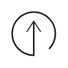

Transparency
nu-in believes that out customers have the right to know where their
products are made and that they are made under safe and humane conditions.
Reduced CO2
We produce close to our warehouse to minimise CO2. We use factories
whom have/are investing in clean energy. All our shipments are CO2 off-set.
Water Saving
When combining recycling with clean water saving washing technology we
can reduce water usage as much as 95%, a whopping 2,500 litres of water saved for every t-shirt made.

Upcycled
95% of used textiles can actually be recycled or repurposed.
We've generated unwanted or surplus fabric into something beautiful for you.
Clean Dyeing
One of the ways we at nu-in reduce our negative impact on our planet is by using
lower impact certified fabrics.
Biodegradable
We don't want our garments sitting in landfill for years on end.
That's why we use materials like organic cotton, which can biodegrade
in the same amount of time as an apple core
Recycled
It's estimated that less than 1 percent of the material used to
produce clothing is recycled into something more, with one truck full of textiles being sent to landfill
or being burned every second.
Seamless
This icon means that this is a seamless product. Having no seams increases
the comfort and durability of the garment as there are no weak areas.
Anti-bacterial
Approved by the World Health Organization, the treatment is non toxic
and eco friendly, ensuring your garment stays fresher for longer.
Organic
Organic cotton is grown without the use of toxic pesticides or fertilizers.
It also emits up to 46% less greenhouse gases that non-organic cotton.